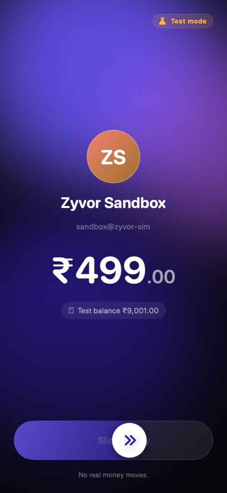
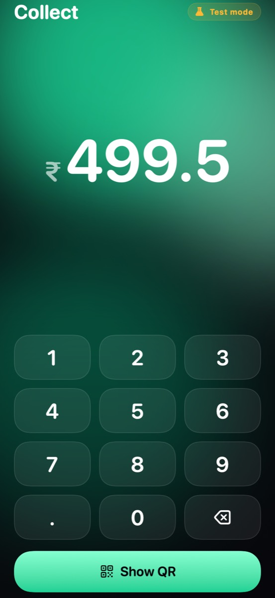
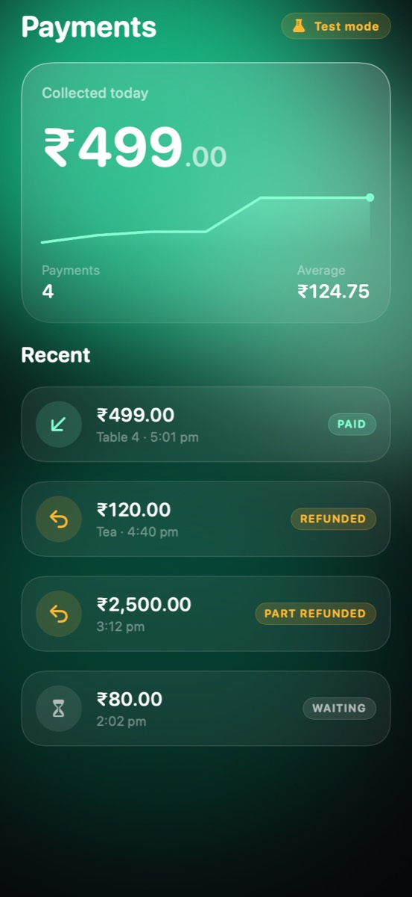

Rupees, exactly
Every amount is an integer in paise. Never a float, so ₹4,99,000.00 is always ₹4,99,000.00.
Zyvor Payments
Open-source payment orchestration, ledger and reconciliation, made for how India pays. Connect your own Razorpay, Cashfree or gateway. Your provider settles. Zyvor routes, records and reconciles.
The phone is a real screenshot of the open-source Vayora Pay test app. Test money; nothing here moves real money.
Made for India
UPI first, GST on every invoice, rupees counted in paise, and a checkout your customers can read.
Every amount is an integer in paise. Never a float, so ₹4,99,000.00 is always ₹4,99,000.00.
The checkout shows a QR or opens the customer's own UPI app. No UPI ID to type. A QR is never proof of payment: only a verified result is.
CGST, SGST and IGST by SAC code, GSTIN-checked, with a GSTR-1 style summary. Zyvor does not file returns for you.
The checkout speaks English, हिन्दी, मराठी, தமிழ், తెలుగు and বাংলা. Translations still await a native reader.
Principles
Every write carries an idempotency key. When a provider does not answer, the payment becomes unknown, and nothing new can start, through any provider, until it is resolved. Zyvor asks the provider. It never re-sends.
unknown. New attempts blocked.captured, onceOpen a settlement and see the payments, refunds, fees and adjustments behind its net, and the bank line it matched. Anything that does not add up becomes a case someone can own.
Example settlement
An append-only, double-entry ledger, balanced per currency by the code and again by a database constraint. Nothing is edited. A correction is a new entry that reverses the old one.
One captured payment
= balanced. Always.
A capability matrix and your rules choose where a payment goes, and the decision records every provider it considered and why it picked one. No black box.
Example routing decision · UPI, no UPI ID
Branches and counters, each with its own QR. Cash entries, an end-of-day closing a second person signs off, and a plain-words timeline for every payment. Records and prompts only: Zyvor holds no cash and moves none.
Tenants are isolated by row-level security, tested as a non-superuser. Webhooks are guarded against SSRF and replays. The audit chain is tamper-evident. The threat model says what is defended and what is not.
Take a closer look
Vayora Pay is a payer. Vayora Merchant is the counter. Together they run the whole loop against the simulator, with no real money. They are not bank-linked UPI apps: that needs NPCI TPAP approval and a sponsor bank.



Screens are real renders of the open-source apps with sample data. Payments are simulated.
Get started
Zyvor is free and open source. Pick how you want to begin.
Everything runs on your machine against a simulated provider. The fastest way to see a payment settle.
| Sandbox | Self-host | Talk to us | |
|---|---|---|---|
| Cost | Free | Free, Apache-2.0 | Ask us |
| Where it runs | Your laptop | Your servers | Not a hosted service today |
| Providers | Simulated | Your own Razorpay, Cashfree or gateway | We can help you connect one |
| Real money | None | Your provider collects and settles | Your provider collects and settles |
| Licences | Not needed | Yours to hold or borrow | Yours to hold or borrow |
No. Zyvor never receives, holds or pays out customers' money. Your own provider account collects and settles. Whoever collects the money must be authorised to, and that is you or your provider. See the regulatory position (not legal advice).
The platform is tested against local simulators and a k3s sandbox. One capability, Cashfree UPI intent and QR, also ran against Cashfree's own sandbox. Nothing has run against a live provider, and Razorpay is simulator-only. STATUS.md lists every gap.
Yes. A generic custom adapter speaks a small JSON contract, so you do not need to fork. Routing, the ledger and reconciliation stay the same. See bring your own provider.
No. Vayora Pay and Vayora Merchant are test apps against the simulator. A real consumer UPI app needs NPCI TPAP approval and a sponsor bank, which these do not have.
No. It issues GST tax invoices and a GSTR-1 style summary. Filing is yours.
The software is free under Apache-2.0. Your provider, bank and any licensed partner charge their own fees; Zyvor can measure the real cost from your settlements.